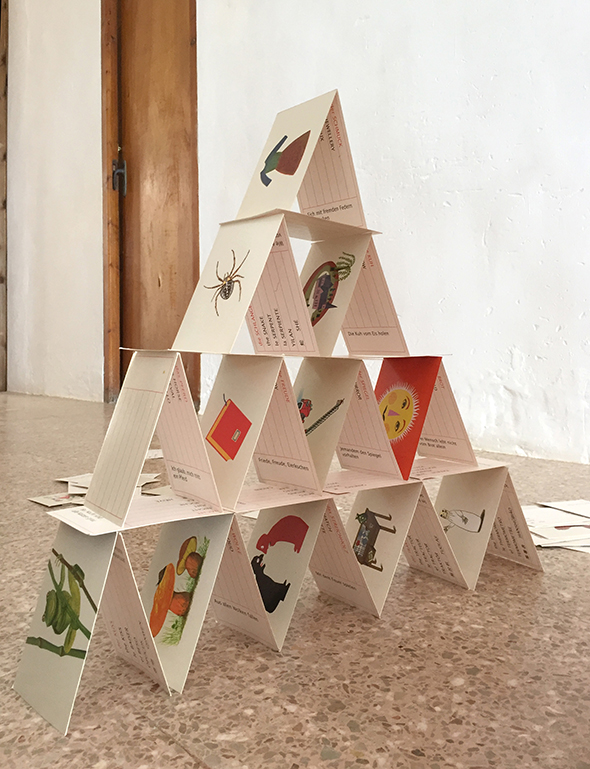

Carolina pone las últimas dos cartas para completar el castillo de naipes.
Carolina puts the last two cards to complete the house of cards.
Carolina setzt die letzten beiden Karten, welche das Kartenhaus vervollständigen.


Carolina pone las últimas dos cartas para completar el castillo de naipes.
Carolina puts the last two cards to complete the house of cards.
Carolina setzt die letzten beiden Karten, welche das Kartenhaus vervollständigen.



Un gran trabajo para las vacaciones de verano. Un marcador oruga que crece. Para cada libro leído la oruga consigue un nuevo punto. En la parte…
Leer más →
Lo creas o no! Un experimento que vale la pena hasta con los niños más impacientes! Corta la parte superior de una raíz (en este caso…
Leer más →
Aquí es una simple idea para un regalo. Además esta hecho rápido. Estirar un trozo de plastilina en el color con el que deseas tener al…
Leer más →
Sutil decoración para puertas. Para puertas blancas o de madera, con una cinta de Washi tienes la puerta en 2 Minutos decorado con un estilo único!…
Leer más →
Con globos llenos de arena la familia de Playmobil tienen unos Puffs de diseño. With sand-filled balloons the Playmobil family has a well designed pouffe. Mit…
Leer más →